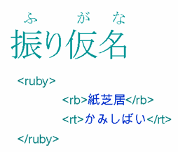

Intended audience:
HTML/XHTML and CSS content authors who want to get a general idea of what lies in the future with regard to CSS support for non-Latin text support. The article assumes a basic understanding of CSS.
The CSS3 modules currently in development will introduce a large number of properties designed to support non-Latin text, from vertical
script support to kashida justification, from ruby positioning to list numbering. This article will give you a glimpse of some of the properties that
lie in store, and discuss how you can help to make these improvements a reality.
The article will not expose you to all of the properties planned for inclusion in CSS3 for the support of international text. It will
give you a flavor of what is to come, so that you can see the potential benefits of completing the work.
None of the specifications we will discuss here are finalized.
Hopefully the article will raise your expectations and motivate you, where appropriate, to become involved in bringing these modules to a
final state and getting them implemented by user agents.
The way items are numbered in a list varies from script to script. In CSS2 nine non-Latin numbering systems were specified. These
included: lower-greek, hebrew, armenian, georgian, cjk-ideographic, hiragana, katakana, hiragana-iroha, katakana-iroha. Unfortunately, user agents
didn't implement all of these, and as part of its mission to represent a snapshot of current usage, the CSS2.1 specification reduced that number to
two: armenian, and georgian.
This shows how important it is to make your voice heard if you want non-Latin features to be supported in specifications and user
agents.
It has to be said that the expected behaviour was also poorly specified for these options.
list-style-type values in CSS 2 and CSS 2.1
The CSS3 Lists Module currently specifies almost 70 non-Latin schemes for list numbering,
and provides much more rigourous rules about their use. (If you want to avoid this number shrinking, however, don't take this for granted, and make
your voice heard! Implementers tend to ask themselves from time to time whether they need to support such a lot of possibilities.)
CSS3 will enable the use of vertical text, and should do so in a way that makes the choice of vertical or horizontal a purely
stylistic decision, ie. you would be able to switch from well-rendered horizontal text to well-rendered vertical text and back with a few simple
tweaks to the style sheet but no need to change the markup. You will also be able to mix horizontal and vertical text within the same page.
Key parameters here are the block-progression direction, the inline text direction, and the glyph orientation.
Text direction properties.
The block-progression direction allows you to specify the direction in which lines of text flow. Top to bottom would be appropriate
for horizontal text, since the lines are stacked top to bottom. Right-to-left would be the normal setting for vertical Chinese, Japanese and Korean,
where lines progress from the right to the left of the page or block. Left-to-right would be appropriate for a script like Mongolian, which is also
vertical but where your eyes start reading from top-left position.
Within a given line it must be possible to specify the inline directionality of text. Right-to-left would be appropriate for scripts
such as Arabic and Hebrew. This needs to be interpreted relative to the direction of the block progression.
A writing-mode property has been proposed as a shortcut that combines both block and inline progression into a
set of common combinations.
It is then necessary to provide a means to control whether the Latin letters in vertical Japanese appear on their side (like
'Johansson' on the picture), or upright (like 'FIFA' on the picture), and whether text (left-to-right and right-to-left) runs up the vertical line or
down.
Some of the more difficult aspects of text direction relate to how one provides the user's preferred way of supporting inline text in
vertically set paragraphs. The CSS Working Group is currently discussing how this should work (May 2006).
When lines of text wrap, the type of script affects the expected behavior - particularly with regard to the treatment of white space
around line breaks in the code.
Chinese and Japanese scripts do not delimit words with spaces, and wrap on a character-by-character basis. There are, however, some
rules (called kinsoku rules in Japan) that forbid certain characters (mostly final punctuation) from appearing at the
beginning of a line, and others that forbid certain characters appearing at the end of a line.
Thai script uses spaces to delimit phrases, rather than words, and typically does not use sentence final punctuation. There is,
however, a strong concept of a word, and text should be wrapped at word boundaries. Some Thai systems rely on users adding zero-width spaces to
indicate where wrapping is appropriate, but it is more common to use a dictionary to determine word boundaries.
Unless the style sheet requires that space be preserved, when dealing with the Latin script, the general process of displaying text
that is wrapped onto a new line in the source involves first reducing all white space at the beginning and end of the line to a single space. Then,
unless the style sheet says otherwise, the line break characters and any surrounding spaces are boiled down to a single space.
The line breaking properties in CSS3 will allow you to indicate appropriate behavior for scripts like Chinese, Japanese and Thai,
where adding a space between wrapped text may not be appropriate. (This is quite a complicated area, and discussion is still going on about how best
to handle this.)
Some of the CSS3 properties will allow you to specify whether or not to wrap differently in the middle of embedded text from another
script. For example, if you have Latin text in the middle of Chinese, should it wrap character by character or word by word? Both are valid, and CSS
should allow you to choose according to your general preferences or the context. (See the two examples in the figure below.)
Line breaking possibilities with mixed CJK and Latin text.
In addition, it is also important to allow the user to express preferences relating to the kinsoku rules and their Chinese and Korean
equivalents. The top example in the figure below shows a typical result when the last character on a line is followed by a small katakana
character.
Small kana and line breaks.
The small katakana character begins the second line. This tends to be the preference in modern Japanese typography, and is
particularly useful in text with thin columns. The second example shows the result of a different approach, often referred to as 'strict'. The line
wrapping algorithm now pulls down the last katakana character from the previous line so that the small katakana character is no longer in
line-initial position, leaving a gap at the end of the line if the text is not justified.
One way of applying the end-of-line kinsoku rules just mentioned is to wrap two characters down to the next line. This may be done,
for example, to avoid a sentence final delimiter appearing at the start of a line.
An alternative is to leave the punctuation hanging out of the margin. CSS3 should allow you to control this.
When specifying alignment and justification of text, CSS needs to allow you to specify how justification is to be applied to mixed
script text. The example below shows how one approach can cause inter-character spacing to be applied to ideographic characters but not Latin
text.
Properties to control justification will also allow appropriate types of justification for various different scripts, for example
ideographic, indic scripts with baseline connectors, South-East Asian scripts that don't use spaces between words, cursive scripts like Arabic,
etc.
Justification type set to normal and inter-ideograph.
Arabic script text typically justifies by stretching the connected baselines of letters within a word, rather than stretching the
spaces between the words. CSS3 should provide properties to allow you to extend the baseline in this way.
You also need to be able to specify the degree to which such stretching is applied during justification.
Justification type set to normal and kashida.
As part of the process of justifying CJK text, you may want to specify whether and how blank space compression behaves. The picture
below shows an example of a full-width parenthesis in Japanese that has its blank space removed to allow for compression.
Trimming during text justification.
You should also be able to specify whether a full-width punctuation mark in ideographic text should be narrowed at the beginning of a
line so that its 'ink' lines up with the first glyph in the lines above and below. This makes the left margin or top margin look neater, but also
affects the justification of the line on which it occurs.
When non-ideographic text or numbers appear in ideographic text it is often preferable to separate the two with a little additional
space. CSS3 will provide a property that allows you to add such spacing without the need for spaces in the content. You can apply it around a number
of different types of embedded text, and combine them as you wish.
Text autospace set to normal, then set numeric plus alpha.
It is common for the glyphs in documents written in East Asian languages to be laid out on a page in a grid pattern. This approach is
helped by that fact that ideographic, kana and hangul characters tend to be the same width.
CSS3 may specify a set of properties for applying grids and for managing non-full width characters inside the grid, such as Latin
text, in various ways. Such properties would indicate whether the grid should apply to non-ideographic characters in the same way as to CJK
characters
This picture shows some vertical Japanese text with no grid applied.
Japanese text with no grid applied.
On this next picture we see the effect of applying one type of grid layout to the previous text.
The fonts module of CSS3 will allow native forms of emphasis, such as the boten marks used in Japanese.
These are similar in use to italicisation or bolding in Latin text - neither of which work well in small font sizes for on-screen ideographic
text.
Japanese boten marks
Various properties are needed to specify the type of boten character to be used, and the position relative to the base text (ie. top or
bottom for horizontal text, and left or right for vertical).
Ruby is a type of annotation associated with a base text that is often used in Japanese, and to some extent
in Chinese also, to provide pronunciation information for ideographs, and sometimes short explanations. The name 'ruby' originated from a named font
size (about half the size of the normal 10 point font) used by British typesetters. In Japanese this is known as furigana.
The Ruby Annotation Recommendation describes how to mark up text so that it is
clear which is the base text and which is the ruby annotation. (This is not a CSS specification.) There are simple and complex ruby models. The
picture below shows the simplest form of markup described in the Recommendation. The text in the <rt> element is the annotation. The base text
is in the <rb> element.
Ruby as displayed and as marked up.

A user agent that displays ruby will normally display simple ruby text above horizontal base text and in a smaller font. For vertical
text the ruby would by default be displayed to the right.
Sometimes you may want to be able to control the location of the ruby text. For example, the Ruby Annotation specification says that
it is common to place pinyin annotations below horizontal Chinese text, rather than above. CSS3 will provide a property will give you control over
the location.
Ruby-position: before
If you specify before, the ruby text will appear above horizontal base text and to the right of vertical text.
Specify after, and the ruby text appears below horizontal base text and to the left of vertical text.
Ruby-position: after
A value of 'right' might be useful for dealing with bopomofo annotations in Traditional Chinese text, where the ruby appears in a
column to the right of each ideographic character, whether the text is horizontal or vertical.
Ruby-position: right
Properties are also needed to indicate the relative alignment of ruby and base text when one is longer than the other. Basically the
effect is applied to whichever is shorter, the ruby text or the base text.
The picture below shows how text would look if a ruby-align property were set to end.
(Ignore the green line, which is there just to show the boundaries more clearly.)
Ruby-align: end
If the ruby text is wider than the base text you can specify whether or not it overhangs any surrounding base text, and to what
amount, using a property for ruby overhang.
The example in the following picture shows the effect of setting a ruby-overhang property to start. Note how the ruby text overlaps the preceding characters, but not the following base text. Note also that ruby does not
overlap itself.
Ruby-overhang: start
For a more detailed description of the currently proposed approach to ruby styling see Ruby Markup and Styling.
We have looked very briefly at some, but by no means all of the international support CSS3 modules will offer. What is more, we have
only dipped our toes into the properties we have described. When CSS3 is done, many a section in this article could become an article in its own
right.
Some of the features we have discussed have been implemented in Internet Explorer 5+, but the specifications have changed since
then, so you should be very careful about using those features. There is no guarantee that anything you implement currently on Internet Explorer will
be interoperable code in the long term. For example, the grid layout properties are now completely different.
With the possible exception of the list type property, there do not appear to be any implementations of these features on other
user agents as yet.
The following list indicates the current status of the modules discussed here. Note that work is still ongoing on all of these
specifications. Even the Candidate Recommendation may return to Working Draft again before it goes on to Recommendation.
This is not an exhaustive list of specifications that contain properties relevant to international text. For example, the proposed CSS3 Line Module, which has not yet been published as a
Working Draft, promises to deliver some important control over behavior related to baseline alignment across scripts.
There is also additional work that must be completed in modules that are dependencies for these specifications.
If you are interested in seeing these features become available, please let the W3C know. It is always useful to us to hear what users
want. There are also a number of practical ways to get involved.
The CSS Working Group has a lot of work on its hands at the moment, and work on these modules has been going slowly. As mentioned
before, there is even currently discussion going on around features in the Candidate Recommendations. Your assistance in developing these
specifications will be appreciated.
You can help move the specifications forward by reviewing and commenting on the public drafts that are made available. If you have
expertise in this area, you might also consider participating in the CSS or Internationalization Working Groups to help move the work along. A
significant amount of specification work benefitted from the Japanese JIS 4051 specification, but there still are a number of areas where it would be
useful to have local input about or confirmation of the requirements and expected behaviors of text in other scripts.
Even when we move these specifications to Recommendation stage, the battle is not yet won. User agent developers must implement these
features so that we can use them, and we need the properties to be widely implemented on a range of user agents. Again, the voice of local users is
important in making that happen. User agent developers are unlikely to implement these features if they hear no-one asking for them.
Finally, you can help by keeping informed about progress on these features and implementing them in your content when they become
available.